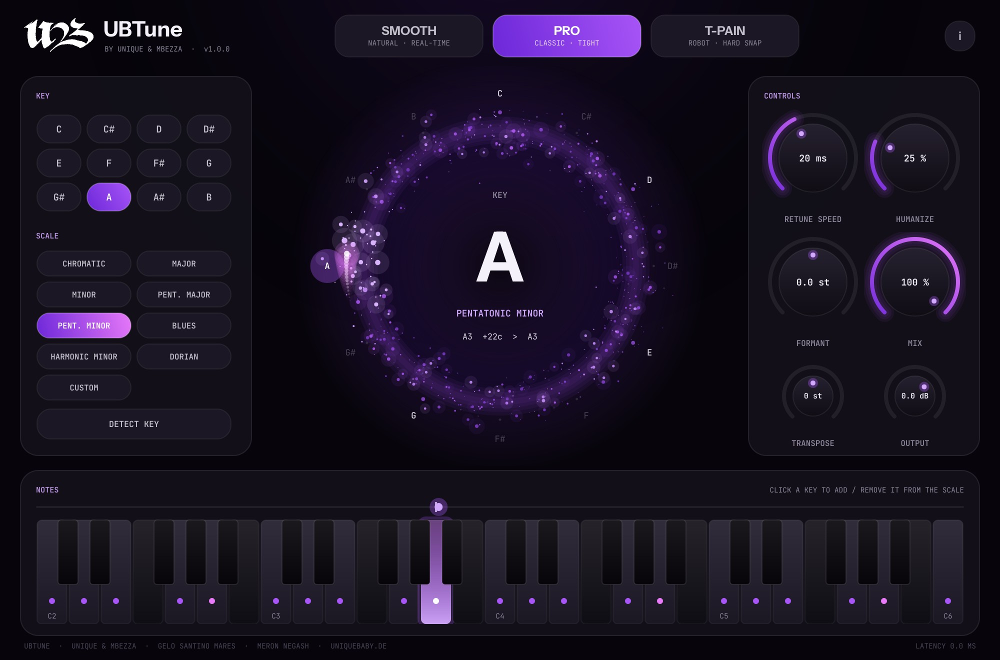
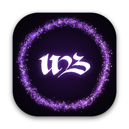

01
SMOOTH
NATURAL · REAL-TIMEFür Lead-Vocals, die einfach sauber klingen sollen. Langsames Retune, Vibrato und Slides bleiben drin – im Stil von Real-Time-Tunern.
Retune 70 msHumanize 60 %
 UBTune
Download
UBTune
Download
Realtime-Autotune für jede DAW – von unsichtbar smooth bis maximal Robot. VST3, AU & Standalone für Windows & Mac.
Dieselbe Engine wie im Plugin – direkt im Browser. Nichts wird hochgeladen, alles läuft auf deinem Gerät. Kopfhörer auf, sonst gibt’s Feedback.
Tipp: T-PAIN + Pentatonic Minor und über die Noten rutschen. 🤖
Ein Klick setzt Retune-Speed und Humanize – danach kannst du alles feintunen.
Für Lead-Vocals, die einfach sauber klingen sollen. Langsames Retune, Vibrato und Slides bleiben drin – im Stil von Real-Time-Tunern.
Der moderne Rap/Pop-Standard: tight auf der Note, aber noch menschlich. Kurze Retune-Zeit, etwas Humanize – der klassische Pro-Sound.
Maximal robotisch, MetaTune-Vibe: 0 ms Retune, harte Notensprünge – und UBTune schaltet automatisch auf Pentatonic Minor/Major.
In der Mitte der Partikel-Ring mit deiner Tonart, unten das Piano, das live zeigt, welche Note du singst – und wohin UBTune sie zieht.

Pentatonic Minor & Major direkt in der Skalen-Auswahl – dazu Major, Minor, Blues, Harmonic Minor, Dorian, Chromatic und Custom. Weniger Töne = härtere, catchigere Sprünge.
8 Sekunden singen – UBTune erkennt Tonart und Dur/Moll und stellt sie ein.
±6 Halbtöne Klangfarbe, unabhängig von der Tonhöhe. Pitch bleibt, Stimme wird größer oder kleiner.
Hält dein natürliches Vibrato, während die Note gerade gezogen wird.
±12 Halbtöne – für Oktav-Doubles, Ad-libs und Chipmunk-Momente.
UBTune meldet seine Latenz (~34 ms) an die DAW – beim Mixen sitzt alles automatisch auf dem Grid. Für Live-Aufnahmen: Standalone-App oder Low-Latency-Monitoring deiner DAW.
VST3 auf Windows & Mac, AU für Logic & GarageBand, plus Standalone-App.
Installer + Deinstaller für beide Systeme. Danach DAW neu starten – UBTune liegt unter UNIQUEBABY.
Common Files\VST3SmartScreen-Hinweis? „Weitere Informationen“ › „Trotzdem ausführen“.
Installer per Rechtsklick › Öffnen starten (nicht notarisiert).

Gelo Santino Mares · Meron Negash